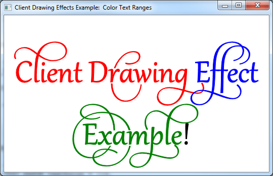

Provides a short tutorial on adding client drawing effects to a DirectWrite application that displays text using the IDWriteTextLayout interface and a custom text renderer.
The end product of this tutorial is an application that displays text that has ranges of text with a different color drawing effect on each, as shown in the following screen shot.

[!Note]
This tutorial is meant to be a simplified example of how to create custom client drawing effects, not an example of a simple method for drawing color text. See the IDWriteTextLayout::SetDrawingEffect reference page for more information.
Â
This tutorial contains the following parts:
To begin, you will need an application with an IDWriteTextLayout object. If you already have an application that displays text with a text layout, or you are using the Custom DrawingEffect Example Code, skip to Step 2.
To add a text layout you must do the following:
Declare a pointer to an IDWriteTextLayout interface as a member of the class.
IDWriteTextLayout* pTextLayout_;
At the end of the CreateDeviceIndependentResources method, create an IDWriteTextLayout interface object by calling the CreateTextLayout method.
// Create a text layout using the text format.
if (SUCCEEDED(hr))
{
RECT rect;
GetClientRect(hwnd_, &rect);
float width = rect.right / dpiScaleX_;
float height = rect.bottom / dpiScaleY_;
hr = pDWriteFactory_->CreateTextLayout(
wszText_, // The string to be laid out and formatted.
cTextLength_, // The length of the string.
pTextFormat_, // The text format to apply to the string (contains font information, etc).
width, // The width of the layout box.
height, // The height of the layout box.
&pTextLayout_ // The IDWriteTextLayout interface pointer.
);
}
Finally, remember to release the text layout in the destructor.
SafeRelease(&pTextLayout_);
Other than the methods inherited from IUnknown, a custom client drawing effect interface has no requirements as to what it must implement. In this case, the ColorDrawingEffect class simply holds a D2D1_COLOR_F value and declares methods to get and set this value, as well as a constructor that can set the color initially.
After a client drawing effect is applied to a text range in a IDWriteTextLayout object, the drawing effect is passed to the IDWriteTextRenderer::DrawGlyphRun method of any glyph run that is to be rendered. The methods of the drawing effect are then available to the text renderer.
A client drawing effect can be as complex as you want to make it, carrying more information than in this example, as well as providing methods to alter glyphs, create objects to be used for drawing, and so on.
In order to take advantage of a client drawing effect, you must implement a custom text renderer. This text renderer will apply the drawing effect passed to it by the IDWriteTextLayout::Draw method to the glyph run being drawn.
The constructor for the custom text renderer stores the ID2D1Factory object that will be used to create Direct2D objects, and the Direct2D render target that the text will be drawn on to.
CustomTextRenderer::CustomTextRenderer(
ID2D1Factory* pD2DFactory,
ID2D1HwndRenderTarget* pRT
)
:
cRefCount_(0),
pD2DFactory_(pD2DFactory),
pRT_(pRT)
{
pD2DFactory_->AddRef();
pRT_->AddRef();
}
A glyph run is a set of glyphs that share the same format, including the client drawing effect. The DrawGlyphRun method takes care of the text rendering for a specified glyph run.
First, create an ID2D1PathGeometry and an ID2D1GeometrySink, and then retrieve the glyph run outline by using IDWriteFontFace::GetGlyphRunOutline. Then transform the origin of the geometry by using the Direct2DÂ ID2D1Factory::CreateTransformedGeometry method, as shown in the following code.
HRESULT hr = S_OK;
// Create the path geometry.
ID2D1PathGeometry* pPathGeometry = NULL;
hr = pD2DFactory_->CreatePathGeometry(
&pPathGeometry
);
// Write to the path geometry using the geometry sink.
ID2D1GeometrySink* pSink = NULL;
if (SUCCEEDED(hr))
{
hr = pPathGeometry->Open(
&pSink
);
}
// Get the glyph run outline geometries back from DirectWrite and place them within the
// geometry sink.
if (SUCCEEDED(hr))
{
hr = glyphRun->fontFace->GetGlyphRunOutline(
glyphRun->fontEmSize,
glyphRun->glyphIndices,
glyphRun->glyphAdvances,
glyphRun->glyphOffsets,
glyphRun->glyphCount,
glyphRun->isSideways,
glyphRun->bidiLevel%2,
pSink
);
}
// Close the geometry sink
if (SUCCEEDED(hr))
{
hr = pSink->Close();
}
// Initialize a matrix to translate the origin of the glyph run.
D2D1::Matrix3x2F const matrix = D2D1::Matrix3x2F(
1.0f, 0.0f,
0.0f, 1.0f,
baselineOriginX, baselineOriginY
);
// Create the transformed geometry
ID2D1TransformedGeometry* pTransformedGeometry = NULL;
if (SUCCEEDED(hr))
{
hr = pD2DFactory_->CreateTransformedGeometry(
pPathGeometry,
&matrix,
&pTransformedGeometry
);
}
Next, declare a Direct2D solid brush object.
ID2D1SolidColorBrush* pBrush = NULL;
If the clientDrawingEffect parameter is not NULL, query the object for the ColorDrawingEffect interface. This will work because you will set this class as the client drawing effect on text ranges of the text layout object.
Once you have a pointer to the ColorDrawingEffect interface, you can retrieve the D2D1_COLOR_F value that it stores using the GetColor method. Then, use the D2D1_COLOR_F to create a ID2D1SolidColorBrush in that color.
If the clientDrawingEffect parameter is NULL, then just create a black ID2D1SolidColorBrush.
// If there is a drawing effect create a color brush using it, otherwise create a black brush.
if (clientDrawingEffect != NULL)
{
// Go from IUnknown to ColorDrawingEffect.
ColorDrawingEffect *colorDrawingEffect;
clientDrawingEffect->QueryInterface(__uuidof(ColorDrawingEffect), reinterpret_cast<void**>(&colorDrawingEffect));
// Get the color from the ColorDrawingEffect object.
D2D1_COLOR_F color;
colorDrawingEffect->GetColor(&color);
// Create the brush using the color specified by our ColorDrawingEffect object.
if (SUCCEEDED(hr))
{
hr = pRT_->CreateSolidColorBrush(
color,
&pBrush);
}
SafeRelease(&colorDrawingEffect);
}
else
{
// Create a black brush.
if (SUCCEEDED(hr))
{
hr = pRT_->CreateSolidColorBrush(
D2D1::ColorF(
D2D1::ColorF::Black
),
&pBrush);
}
}
Finally, draw the outline geometry and fill it using the solid color brush that you just created.
if (SUCCEEDED(hr))
{
// Draw the outline of the glyph run
pRT_->DrawGeometry(
pTransformedGeometry,
pBrush
);
// Fill in the glyph run
pRT_->FillGeometry(
pTransformedGeometry,
pBrush
);
}
Don't forget to release the Direct2D factory and render target in the destructor.
CustomTextRenderer::~CustomTextRenderer()
{
SafeRelease(&pD2DFactory_);
SafeRelease(&pRT_);
}
In the CreateDeviceDependent resources, create the custom text renderer object. It is device dependent because it uses the ID2D1RenderTarget, which is itself device dependent.
// Create the text renderer
pTextRenderer_ = new CustomTextRenderer(
pD2DFactory_,
pRT_
);
Instantiate ColorDrawingEffect objects in red, green, and blue.
// Instantiate some custom color drawing effects.
redDrawingEffect_ = new ColorDrawingEffect(
D2D1::ColorF(
D2D1::ColorF::Red
)
);
blueDrawingEffect_ = new ColorDrawingEffect(
D2D1::ColorF(
D2D1::ColorF::Blue
)
);
greenDrawingEffect_ = new ColorDrawingEffect(
D2D1::ColorF(
D2D1::ColorF::Green
)
);
Set the drawing effect for specific ranges of text by using the IDWriteTextLayou::SetDrawingEffect method and a DWRITE_TEXT_RANGE struct.
// Set the drawing effects.
// Red.
if (SUCCEEDED(hr))
{
// Set the drawing effect for the specified range.
DWRITE_TEXT_RANGE textRange = {0,
14};
if (SUCCEEDED(hr))
{
hr = pTextLayout_->SetDrawingEffect(redDrawingEffect_, textRange);
}
}
// Blue.
if (SUCCEEDED(hr))
{
// Set the drawing effect for the specified range.
DWRITE_TEXT_RANGE textRange = {14,
7};
if (SUCCEEDED(hr))
{
hr = pTextLayout_->SetDrawingEffect(blueDrawingEffect_, textRange);
}
}
// Green.
if (SUCCEEDED(hr))
{
// Set the drawing effect for the specified range.
DWRITE_TEXT_RANGE textRange = {21,
8};
if (SUCCEEDED(hr))
{
hr = pTextLayout_->SetDrawingEffect(greenDrawingEffect_, textRange);
}
}
You must call the IDWriteTextLayout::Draw method rather than the ID2D1RenderTarget::DrawText or ID2D1RenderTarget::DrawTextLayout methods.
// Draw the text layout using DirectWrite and the CustomTextRenderer class.
hr = pTextLayout_->Draw(
NULL,
pTextRenderer_, // Custom text renderer.
origin.x,
origin.y
);
In the DemoApp destructor, release the custom text renderer.
SafeRelease(&pTextRenderer_);
After that, add code to release the client drawing effect classes.
SafeRelease(&redDrawingEffect_);
SafeRelease(&blueDrawingEffect_);
SafeRelease(&greenDrawingEffect_);
Â
Â